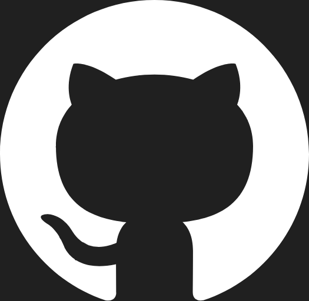

Gabriel Fernandez Waisberg
Portfolio Web
Programador
Soy Gabriel Fernandez Waisberg, programador. Creo soluciones rapidas, elegantes y eficientes. Explora mis proyectos y habilidades.
HABILIDADES
- Python
- C# .NET
- SQL Server / MySQL
- MongoDB
- HTML, CSS, JavaScript
- Node.js
- Docker
- Git
- TypeScript
- React.js
- Next.js
- Angular
- Nest.js
PROYECTOS
Juego: Snake Game
- Creado con Python y la librería pygame
- Link del repositorio: [Repositorio]
- Jugarlo: Jugar
- Descargarlo: Descargar
Calculadora: The Calculator
- Hecha con C# .NET implementando operaciones básicas que transforma decimales en binario y viceversa usando programación orientada a objetos (POO), sobrecarga de operadores comparativos y lógicos.
- Link del repositorio: [Repositorio]
- Descargarlo: Descargar
Desarrollo web: Owlflix
- El frontend lo cree con HTML, CSS y JavaScript utilizando el diseño UX/UI, haciendolo responsive e interactivo.
- Para el backend use Node.js, Express para la API y MySQL para la base de datos.
- Link del repositorio: [Repositorio]
- Link del sitio web: [Owlflix]
FREELANCE
Sistema de stock
CONTACTO
Si te interesa mi perfil, no dudes en contactarme:
Email: gfwaisberg@gmail.com
LinkedIn: Gabriel Fernandez Waisberg

Github: Gabriel Fernandez Waisberg